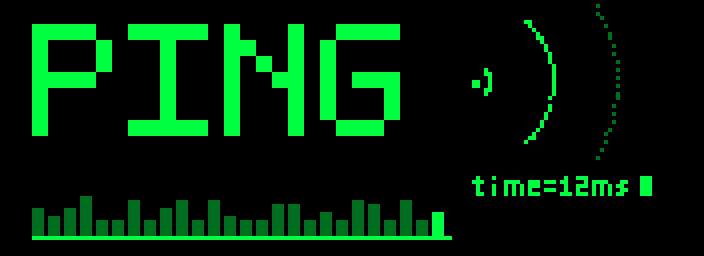

European University Institute · Florence · 2026–27
[ schedule | present | formats | scope | mailing list ]
PING is a new EUI working group on politics and the internet. Computational social science at the core, other disciplines and methods welcome. A place to present ongoing work and get constructive feedback. Meets on Wednesdays, 16:30–17:45, followed by an apéro. All EUI members (faculty, researchers, fellows, visiting fellows) welcome.
| Date | Room | Presenter |
|---|---|---|
| 2026 | ||
| Wed 14 Oct | Seminar Room 3, Badia Fiesolana | Amelie (EUI SPS, first year) |
| Wed 4 Nov | Sala Belvedere, Villa Schifanoia | Mateo Vásquez-Cortés |
| Wed 11 Nov | Seminar Room 3, Badia Fiesolana | Prashant Garg |
| Wed 25 Nov | Sala Belvedere, Villa Schifanoia | Andreas Küpfer |
| Wed 9 Dec | Seminar Room 1, Badia Fiesolana | TBA |
| 2027 | ||
| Wed 13 Jan | Seminar Room 3, Badia Fiesolana | Eszter Hargittai |
| Wed 27 Jan | Seminar Room 2, Badia Fiesolana | TBA |
| Wed 10 Feb | Seminar Room 2, Badia Fiesolana | TBA |
| Wed 24 Feb | Seminar Room 2, Badia Fiesolana | TBA |
| Wed 10 Mar | Seminar Room 2, Badia Fiesolana | TBA |
| Wed 24 Mar | Seminar Room 2, Badia Fiesolana | TBA |
| Wed 7 Apr | Sala del Capitolo, Badia Fiesolana | TBA |
| Wed 21 Apr | Sala del Capitolo, Badia Fiesolana | TBA |
| Wed 5 May | Sala del Capitolo, Badia Fiesolana | TBA |
| Wed 19 May | Seminar Room 3, Badia Fiesolana | TBA |
| Wed 2 Jun | Sala del Capitolo, Badia Fiesolana | TBA |
Getting there: EUI campus map and buildings. The EUI runs a shuttle bus between buildings.
To present, fill out the presenter application form with a tentative title, short abstract, preferred format, and preferred date(s). Deadline: 14 October.
Applications are aimed at researchers outside the EUI, but EUI members are welcome to apply as well. The first session (14 Oct) is an internal presentation.
Early-career researchers and scholars underrepresented in the field particularly encouraged. Presenters from outside the EUI self-fund travel and accommodation.
Remote presentation is possible, but we prefer in-person presentations.
Each session runs 1h15. Two options:
Digital technologies and politics, broadly defined:
Any method: computational text and network analysis, field and survey experiments, causal inference with observational and digital trace data, qualitative and ethnographic work on online communities, theory.
Sign up for email announcements
Questions: kevin.munger@eui.eu
Organized by Kevin Munger and Sebastian Ramirez-Ruiz.
$ ping eui.eu
Last updated 8 October 2026.